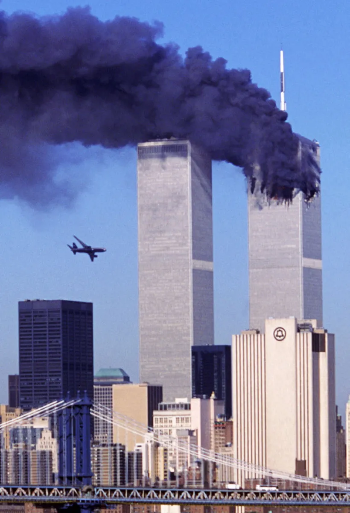

Tragedi 11 September 2001 (9/11) adalah serangkaian empat serangan teroris terkoordinasi oleh kelompok ekstremis Al-Qaeda terhadap Amerika Serikat. Dalam peristiwa tersebut, 19 pembajak merebut kendali empat pesawat komersial: dua pesawat ditabrakkan ke Menara Kembar World Trade Center di New York hingga runtuh, satu pesawat menghantam gedung Pentagon di Virginia, dan pesawat keempat jatuh di lapangan di Pennsylvania setelah penumpang berusaha melawan. Serangan ini menewaskan hampir 3.000 orang dan menjadi salah satu peristiwa paling bersejarah dalam era modern yang memicu kebijakan "Perang melawan Terorisme" (War on Terror) global serta mengubah sistem keamanan penerbangan dan geopolitik dunia secara signifikan.
| No. | Kategori | Detail Keterangan |
|---|---|---|
| 1. | Tanggal Kejadian | 11 September 2001 |
| 2. | Waktu Serangan Umum | 08:46 - 10:03 EDT (Waktu Pantai Timur AS) |
| 3. | Pelaku Utama | Kelompok ekstremis Al-Qaeda (19 pembajak) |
| 4. | Pemimpin Operasi | Osama bin Laden & Khalid Sheikh Mohammed |
| 5. | Total Korban Jiwa | 2.977 korban tewas (+19 pembajak) |
| 6. | Dampak Utama |
|
| 7. | Dampak Geopolitik |
|